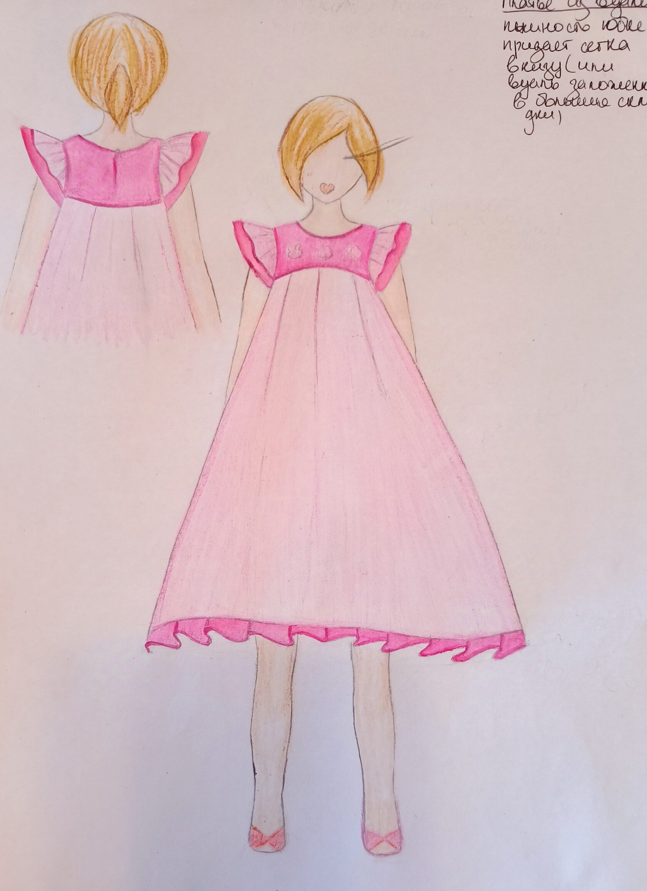

Cruise collection 2025
Task: cruise collection with 3D flowers and handmade flowers, and few simple blouse-dresses


Childrens collection S/S 2024 (some models)
Task: girls dresses from natural fabric
- 
My own collection A/W 2019
With that collection I was nominated to represent Ukraine at "A Design Award" competition, at once in two nominations - design clothes and fabric designe. Also that collection was invited to exhibit in Italian "Museo del Design"
Collection cuted on faux leather
Idea of that collection is to create special pattern, which can be beautiful and sophisticated and make women’s figure better. Therefore, I created drawing which I cut by hand on faux leather and made collection using that style in all gowns. In addition, I made all patterns of collection, technical description and control of sewer, while they sew.


Hello! I'm Nataly fashion designer from Odessa,Ukraine. I love to design beautiful, sophisticated clothes or simple and nice design clothes. I love color and interesting textures, and also beautiful prints and everything, what makes women amazing
-
Nataly Stasyuk
Fashion designer